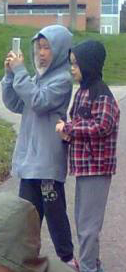

Calloused Heart: to suffer yet not suffer at all. to hate the self that gives the self the ability to hate in the first place. to be artistic, shy, kind, impulsive, stressed, self-loathing, emotional, sensitive, greedy, self-centered, giving, guilty, sentimental, strange, stupid, mature, childish, sad, depressed, suicidal, happy, loved, loving, gentle, and alive. this is me.

hello stephen,
it feels wildly narcassitic to be writing a letter to yourself, though this isn't the first time this has happened. i don't know what to write. i don't know what to say. i don't know how to possible talk to the stephen that will eventually look back at this. what could you possibly think of me? pity, remorse, sadness, regret, anger, happiness? i can never know, but maybe that's the point.
the future is uncertain, you've said that yourself. yet that's what you thought before too. what i thought. and i'm still here. that counts for something, right? i think about all of the people i've written to a lot. what to say. how to say it. what words i could possible string together to express my love to them. i hope my messages reach them. i hope they feel loved. they all deserve to be. that's all i truely want.
and by extension, that's what i'm trying to do for myself. i'm better at it now. i don't loathe myself. yet at the same time, i'm still not satisfied. i'm still confused. i don't know why all of these amazing people seem to like me so much. to want to spend time with such a worthless speck of dust like i am. what do they see that i can't? maybe i'll never know. maybe i can't. maybe that would ruin the magic.
thank you. i don't know what i am thanking you for, but maybe i'll know in the future. maybe you know. and that's a bit exciting. or maybe i'm simply thankful to be alive. to be standing today, surrounded by so many people i hold dear. happy thanksgiving to yourself, and all those you love.
from and to stephen,
thanks